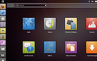

Natty Narwhal
Der Nachfolger von Maverick Meerkat heißt 11.04 „Natty Narwhal“ („Schicker Narwal“). Diese Version wird 18 Monate mit Aktualisierungen versorgt.
| Ubuntu 11.04 | |
| Basisdaten | |
| Codename: | Natty Narwhal |
| Deutsche Übersetzung: | Schicker Narwal |
| Status: | nicht mehr unterstützt |
| Veröffentlichungstermin: | 28. April 2011 |
| Unterstützt bis: | 28. Oktober 2012 |
| Zeitleiste: | « 10.10 … 11.04 … 11.10 » |
Allgemein¶
Entwicklungsziele¶
Ein Schwerpunkt der Entwicklung von Version 11.04 war die Gestaltung des Aussehens. „Natty“ soll ebendies sein: „natty“, also schick. Mark Shuttleworth hofft, dass diese Version die bestaussehende der bisherigen Ubuntu-Releases wird. Weiterhin sollen, gerade im Grafikbereich, die Möglichkeiten moderner Hardware voll genutzt werden. Ein weiterer Schwerpunkt wird auf neuen Chips und Architekturen liegen, speziell soll erstmals die ARM-Architektur integriert werden.
Kernel¶
„Natty“ beinhaltet den Kernel 2.6.38  . Dieser bietet vergleichsweise wenige neue Funktionen, beseitigt aber einige Fehler; zudem enthält er neue Treiber für Intel-, AMD-Radeon- und Nvidia-Grafikkarten. Enthalten ist auch der nur 200 Codezeilen umfassende „Wunderpatch“, der die Reaktionszeit des Desktops unter Vollauslastung verbessern kann. Auf die Feinheiten des neuen Kernels geht dieser Ikhaya-Artikel ein.
. Dieser bietet vergleichsweise wenige neue Funktionen, beseitigt aber einige Fehler; zudem enthält er neue Treiber für Intel-, AMD-Radeon- und Nvidia-Grafikkarten. Enthalten ist auch der nur 200 Codezeilen umfassende „Wunderpatch“, der die Reaktionszeit des Desktops unter Vollauslastung verbessern kann. Auf die Feinheiten des neuen Kernels geht dieser Ikhaya-Artikel ein.
Ubuntu (GNOME)¶
|  |
| Unity Oberfläche |
In Ubuntu 11.04 wird nicht – wie ursprünglich erwartet – GNOME 3 (auf der Basis des Fenster-Managers mutter und einer neuen GNOME Shell), sondern die Desktop Oberfläche Unity als Plugin des Fenster-Managers Compiz eingesetzt. Es ist jedoch vorgesehen, dass man bei der Anmeldung frei zwischen dem klassischen Ubuntu-Desktop (das alte GNOME 2.x) und dem Unity-Desktop wählen kann.
Zudem wird der Medienplayer Rhythmbox durch Banshee und die Fernwartungssoftware Vinagre durch Remmina ersetzt.
LibreOffice¶
Ab Version 11.04 wird OpenOffice.org durch die im September 2010 entstandene Abspaltung LibreOffice ersetzt. Grund hierfür ist der zu große Aufwand für die Betreuung zweier Office-Suiten, weshalb auf eine Paketierung von OpenOffice.org verzichtet wurde (siehe Ubuntu Mailingliste  ).
).
Firefox¶
Als Standard-Browser wird die Version 4.0 von Firefox eingesetzt, welche am 22. März veröffentlicht wurde. Die Neuerungen sind im Ikhaya-Artikel Mozilla veröffentlicht Firefox in Version 4 beschrieben. Da diese Version inzwischen von Mozilla nicht mehr mit Updates unterstützt wird, wird ein Update auf Firefox 5.0 über das Software-Center bzw. die Paketverwaltung angeboten.
Kubuntu (KDE SC)¶
Als Desktopumgebung von Kubuntu wird KDE SC in der Version 4.6 (veröffentlicht im Januar 2011) verwendet. KWin zeichnet sich in dieser Version durch eine erhöhte Performance und einer verbesserten Erkennung der Fähigkeiten des verwendeten Grafikkartentreibers aus. Zusätzlich können Programme einer bestimmten Aktivität zugeordnet werden. Des Weiteren wurde das Samba Dateifreigabesystem grundlegend erneuert, wodurch sich die Dateifreigabe leichter gestaltet. Außerdem wurde das Modul zur Sprachauswahl und die Druckerkonfiguration überarbeitet.
Xubuntu (Xfce)¶
Anfang 2011 wurde Xfce 4.8 veröffentlicht, das die Grundlage von Xubuntu 11.04 bildet. Die Neuerungen gegenüber der Vorgängerversion 4.6 sind zahlreich: Integration von GIO, Udev, ConsoleKit und PolicyKit, Thunar beherrscht SMB (wodurch erstmals die Nutzung von Netzwerkfreigaben ohne Zusatzprogramme möglich ist), (S)FTP und WebDAV, ein neu geschriebenes Panel, eine eigene Energieverwaltung, Konfiguration von Bildschirmauflösung und Mehrschirmbetrieb u.a.m.
Lubuntu (LXDE)¶
Lubuntu ist immer noch keine offizielle Ubuntu-Version. Nachdem sich Mark Shuttleworth wohlwollend geäußert hat, ist der Status von Lubuntu als offizielle Ubuntu-Variante in naher Zukunft möglich und für die nächste Ubuntuversion geplant.
Neben einem neuen Design und einem überarbeiteten Installationsassistenten wurden drei Standardprogramme ersetzt:
Aqualung durch Audacious (AudioPlayer)
Xarchiver durch File-Roller (Packprogramm)
Im Dateimanager PCManFM ist (schon ab 10.10) die direkte Unterstützung von Netzwerkfreigaben integriert. Entfallen ist die interne Suchfunktion des Dateimanagers, die sich aber via Catfish nachrüsten lässt. Symbole auf dem Desktop, die ebenfalls durch PCManFM verwaltet werden, sind jetzt frei beweglich (Lubuntu Release Notes ).
Probleme¶
Da nun ein 3D-fähiger Grafiktreiber zwingend vorausgesetzt wird, kann bei etlichen älteren Grafikkarten die grafische Oberfläche nicht (mehr) gestartet werden. Dies betrifft beispielsweise ältere AMD-Grafikkarten, die durch das proprietäre Kernelmodul fglrx nicht mehr unterstützt werden. Abhilfe schafft die manuelle Konfiguration des X-Servers. Von diesem Problem ist zumindest Lubuntu betroffen (das aber gar keinen 3D-Desktop verwendet...).
Achtung!
Um zu überprüfen, ob der eigene Rechner davon betroffen ist, wird ein Vorab-Test mit der Live-CD dringend empfohlen. Beim Upgrade einer bestehenden Installation kann es ansonsten passieren, dass man hinterher keine grafische Oberfläche mehr hat.
Ubuntu Netbook Edition¶
Die speziell für den Einsatz auf Netbooks gedachte Version ist ab „Natty“ die neue Standard-Version (siehe oben). Daher entfällt die zuletzt für den Vorgänger Maverick Meerkat verfügbare Variante "Ubuntu Netbook Edition" ersatzlos.
Links¶
Ubuntu 11.04 „Natty Narwhal“ ist erschienen (Ikhaya-Artikel)
„Natty Narwhal“ („Schicker Narwal“) ist der Codename für Ubuntu 11.04 (Ikhaya-Artikel)
Blogeintrag
von Mark Shuttleworth zu Natty
- Erstellt mit Inyoka
-
 2004 – 2017 ubuntuusers.de • Einige Rechte vorbehalten
2004 – 2017 ubuntuusers.de • Einige Rechte vorbehalten
Lizenz • Kontakt • Datenschutz • Impressum • Serverstatus -
Serverhousing gespendet von